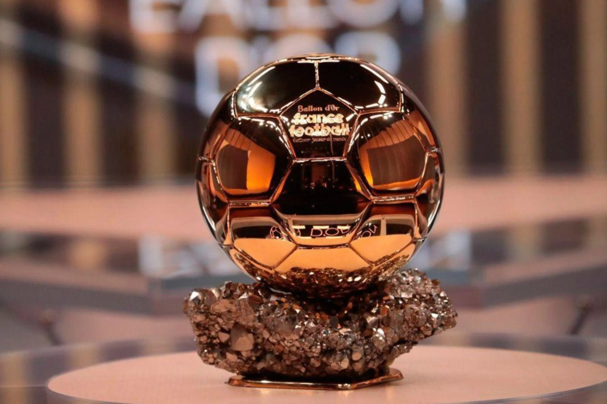

Cristiano Ronaldo gana el BOAT
Publicado el por Oscar Singo
A pesar de que la gala del Balón de Oro fue el lunes en Inglaterra, hoy se dio a conocer que Cristiano Ronaldo fue el ganador del "BOAT" (Best Of All Time), premio a la mejor temporada de un futbolista en la historia, elegido por los aficionados. El portugués le ganó a Lionel Messi que quedó en segundo lugar por su temporada 2012 con el Barcelona
¿Qué es el BOAT?
El BOAT reunió a los futbolistas que ganaron el Balón de Oro en más de dos oportunidades y buscó conocer cuál de ellos encarnó mejor el legado del galardón. En ese contexto, Lionel Messi, máximo ganador en la historia del premio, apareció naturalmente como uno de los principales candidatos. Sin embargo, la propuesta no buscó establecer un nuevo reconocimiento oficial ni reemplazar el prestigio del Balón de Oro tradicional, sino ofrecer un espacio para que los aficionados expresen su opinión y participen de una discusión que atraviesa épocas, estilos y generaciones. Según los organizadores, el objetivo fue darle protagonismo al público y fortalecer la comunidad global que sigue cada año la elección del mejor futbolista del mundo.

Cómo fue la participación en la votación del BOAT
La votación permaneció abierta hasta el 27 de octubre y sus resultados fueron publicados este 28 de octubre en los canales oficiales del Balón de Oro.
- Participación récord de aficionados de todo el mundo a través de plataformas digitales.
- Selección exclusiva entre los futbolistas históricos galardonados con múltiples Balones de Oro.
- Validación final de los votos supervisada por los organizadores oficiales del evento.
"El fútbol reconoce la grandeza de quienes marcaron generaciones enteras y dejaron una huella imborrable en la historia del deporte."
Comité Organizador del Balón de Oro
Más información Cristiano gana el B.O.A.T. a mejor Balón de Oro de la historia